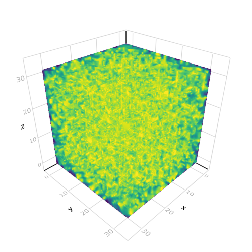
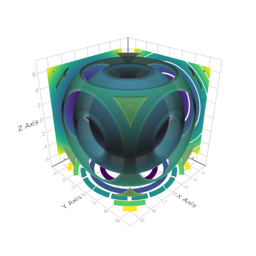
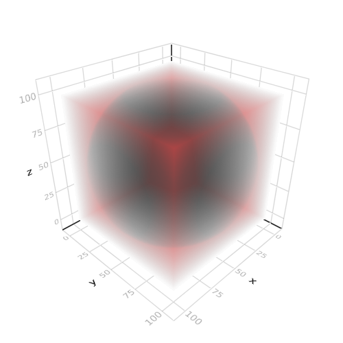
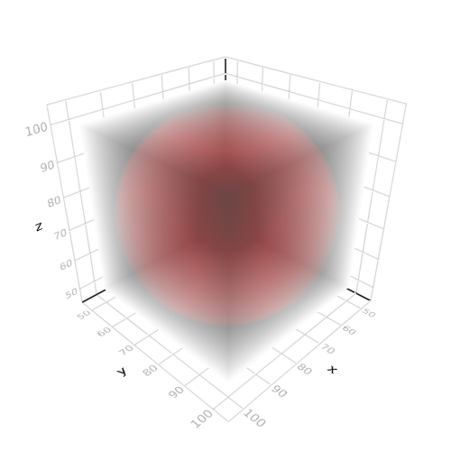
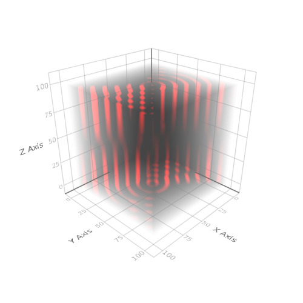

volume
Volume Function
Tags: 3d, volume.
using Makie
volume(rand(32, 32, 32), algorithm = :mip)

3D Contour with 2D contour slices
Tags: 3d, contour, heatmap, transformation, volume.
using Makie
using LinearAlgebra
function test(x, y, z)
xy = [x, y, z]
((xy') * Matrix(I, 3, 3) * xy) / 20
end
x = range(-2pi, stop = 2pi, length = 100)
scene = Scene()
c = contour!(scene, x, x, x, test, levels = 6, alpha = 0.3)[end]
xm, ym, zm = minimum(scene.limits[])
# c[4] == fourth argument of the above plotting command
contour!(scene, x, x, map(v-> v[1, :, :], c[4]), transformation = (:xy, zm), linewidth = 10)
heatmap!(scene, x, x, map(v-> v[:, 1, :], c[4]), transformation = (:xz, ym))
contour!(scene, x, x, map(v-> v[:, :, 1], c[4]), fillrange = true, transformation = (:yz, xm))

3D cube with sphere cutout, inside
Tags: 3d, implicit, implicits, volume.
using Makie
scene = Scene()
r = range(-1, stop = 1, length = 100)
mat = [(x.^2 + y.^2 + z.^2) for x = r, y = r, z = r]
mat2 = mat .* (mat .> 1.4)
#plot the space inside
volume(mat2, algorithm = :absorptionrgba)

3D cube with sphere cutout, outside
Tags: 3d, implicit, implicits, volume.
using Makie
scene = Scene()
r = range(-1, stop = 1, length = 100)
mat = [(x.^2 + y.^2 + z.^2) for x=r, y=r, z=r]
mat2 = mat .* (mat .< 1.4)
#plot the space outside
volume(50..100, 50..100, 50..100, mat2, algorithm = :absorptionrgba)

Biohazard
Tags: 3d, absorption, algorithm, implicit, implicits, volume.
using Makie
(a, b) = -1, 2
r = range(-5, stop = 5, length = 100)
z = ((x,y) -> y.^4 - x.^4 + a.*y.^2 + b.*x.^2).(r, r')
me = [cos.(2 .* pi .* sqrt.(x.^2 + y.^2)) .* (4 .* z) for x=r, y=r, z=r]
me2 = me .* (abs.(me) .> z .* 3)
volume(me2, algorithm = :absorptionrgba)
